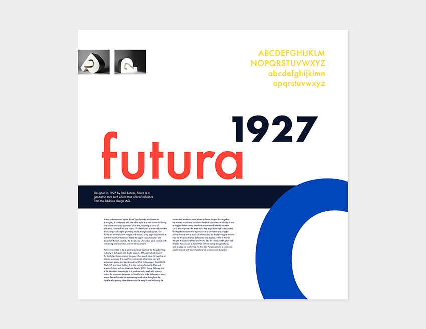
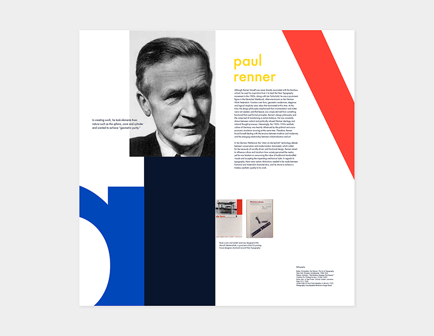
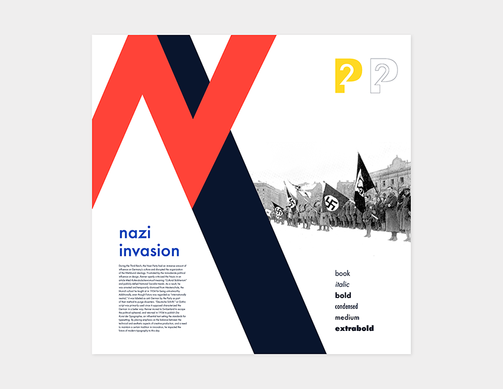

Futura
Print, Typography
This poster series is the culmination of a month long assignment – researching a given typeface, type designer and it's corresponding context, designing a 2D letterform combination, and building a 3D version of the typemark. Finally, 3 posters were designed which presented the research and images of the typeface. They are meant to work together as a series and individually.
16" x 16" Individual Posters


